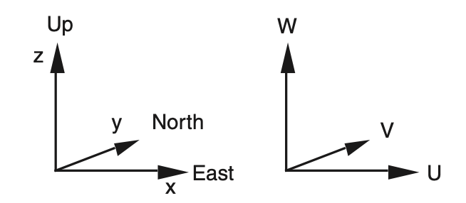
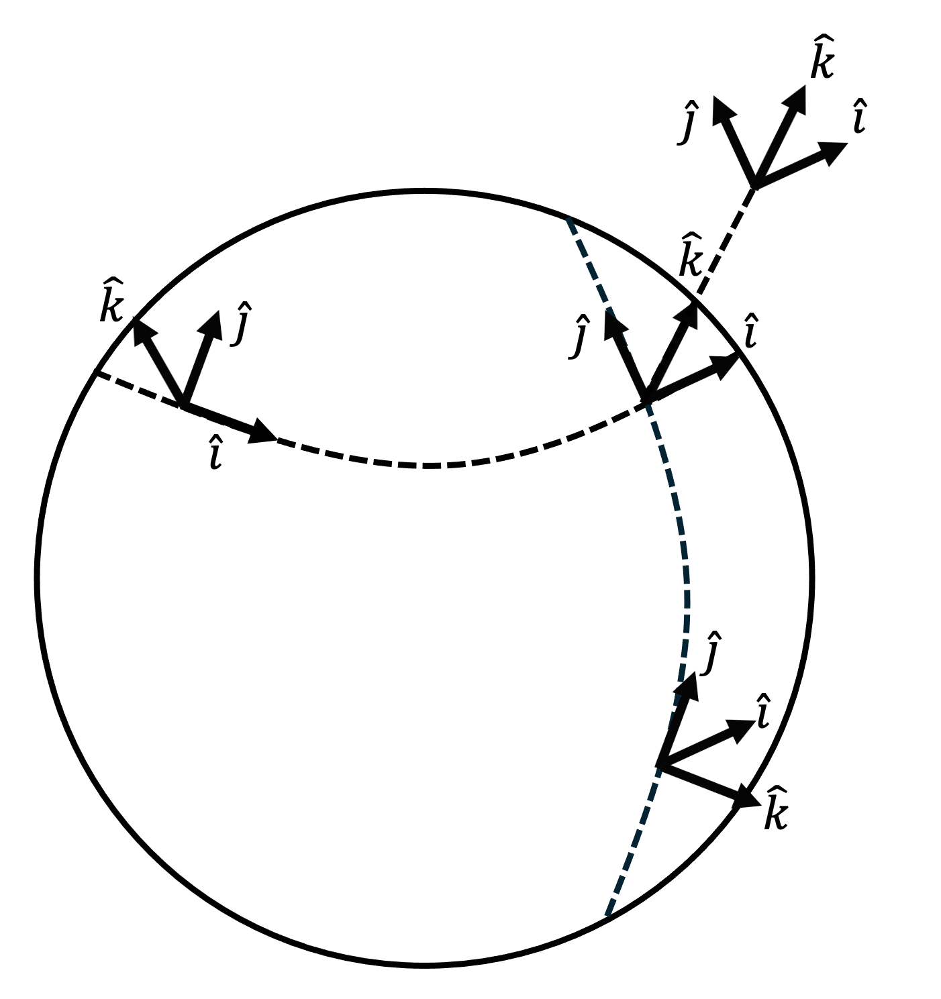

Section 2.3 Local Cartesian coordinate system
We combine the Cartesian coordinate system with the geographic coordinate system described previously to create the local Cartesian coordinate system. The word "local" has the same meaning here as it does for the local derivative of Chapter 1: It refers to a fixed location on Earth.
We place the origin of the local Cartesian coordinate system at any point of interest fixed to the planet’s surface (Figure 2.3.1(a)) or within its atmosphere (Figure 2.3.1(b)). This point is identified by geographic coordinates \((\lambda, \phi, a+z)\text{.}\) Note this point rotates along with Earth about Earth’s polar axis.
The local Cartesian coordinate system has the following characteristics.
-
\(x\) increases (decreases) to the local east (west), parallel to curves of latitude.
-
According to the arc length formula, a small change in \(x\) is given by\begin{equation*} \delta x = a \cos{\phi} \, \delta \lambda \end{equation*}along Earth’s surface (Figure 2.3.2(a)) and by\begin{equation*} \delta x = (a + z) \cos{\phi} \, \delta \lambda \end{equation*}within Earth’s atmosphere (Figure 2.3.2(b)).
-
\(y\) increases (decreases) to the local north (south), parallel to curves of longitude.
-
According to the arc length formula, a small change in \(y\) is given by\begin{equation*} \delta y = a \, \delta \phi \end{equation*}along Earth’s surface (Figure 2.3.3(a)) and by\begin{equation*} \delta y = (a+z) \, \delta \phi \end{equation*}within Earth’s atmosphere (Figure 2.3.3(b)).
-
\(z\) increases (decreases) locally upward (downward), perpendicular to Earth’s mean sea level.
-
\(u\) is the zonal component of velocity and is positive (negative) for westerly (easterly) flow. (Remember wind is named for the direction it blows from, not toward!)
-
\(v\) is the meridional component of velocity and is positive (negative) for southerly (northerly) flow.
-
\(w\) is the vertical component of velocity and is positive (negative) for upward (downward) motion.
A very simplified depiction of the correspondence between the coordinates and velocity components of the local Cartesian Coordinate system is shown in Figure 2.3.4 below.

Subsection 2.3.1 Note on rotation, sphericity, and the local Cartesian coordinate system
A difficulty of using the local Cartesian coordinate system is that its \(x\)-, \(y\)-, and \(z\)-axes and their corresponding \(\hat{i}\text{,}\) \(\hat{j}\text{,}\) and \(\hat{k}\) unit direction vectors, respectively, placed at any location fixed relative to Earth change orientation in space as Earth rotates. We will tackle this complication in Chapter 3.
Another difficulty of using the local Cartesian coordinate system is that its \(x\)-, \(y\)-, and \(z\)-axes and their corresponding \(\hat{i}\text{,}\) \(\hat{j}\text{,}\) and \(\hat{k}\) unit direction vectors, respectively, change orientation in space depending on the longitude \(\lambda\) and latitude \(\phi\) of the location at which the origin of the coordinate system is placed, as shown in Figure 2.3.5 below. We will tackle this complication in Chapter 5.
